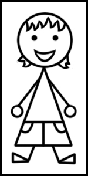
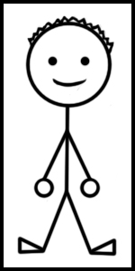
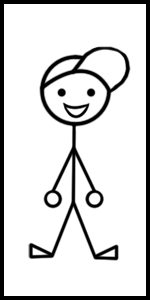

Who is this wacky bunch?

Katie is a late 80's baby whose love of technology grew along with all the different advancements. She remembers sending secret messages via pager and then only having minutes to talk on nights and weekends. All her folders were always Lisa Frank and she always got in trouble for trying to feed her Tamagotchi in class. Pokemon cards and Neopets are like second nature and you really should check out her massive t-shirt collection.

Andrew is a mid 80's baby and remembers the entirety of the 90's in all its glory. Growing up, the boom of household computers grabbed his attention and he later learned that the best bang for your buck was to build it yourself. He met most of his friends, including Katie, in old gaming chatrooms on AIM and ICQ. Sometimes he thinks about how we had to wait for what seemed like forever, without certainty, enduring abrasive screeches to be able to connect to internet and how everything is expected to be instant now-a-days.

Billy is the kid in the mix and he's 12 years old. He is fascinated with mom and dad's media and nostalgia collection. He learned from a young age the things on the shelves are not to be touched, but now he knows that one day those things will be his and he can do what he wants. Billy loves video games like his dad but has shown an immense interest in ones that can teach you how to code. His parents are always showing him movies and television shows that he can’t believe ever got made because they are so wild.